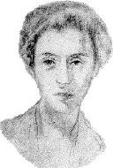

Samuel Greenberg: American Poet
Home | Bio | Works | Praise | Images | Crane | Reading | Links | E-mail
|
Samuel Greenberg: American Poet
Home | Bio | Works | Praise | Images | Crane | Reading | Links | E-mail
|
|
 Self portrait, 1915 |
I've been ill amongst my fellow kind "Enigmas", from Greenberg's Sonnets of Apology |
| Samuel Greenberg died of tuberculosis in 1917, at age 23. His childhood was spent in poverty on the Lower East Side of New York City. After leaving school at 14 to begin working, he became ill and spent his final years as a patient in several charity hospitals, where he did most of his writing. (For an overview of his life, see the time line. For details about his connection to Hart Crane, see the Crane page.) | |
|
||||||||||||||||||||
Sam Greenberg was crazy about words, crazy about their sounds and shapes and the magical life of association which they have unto themselves as words. This boy was drunk on words and he poured them forth with a wild, chaotic passion.
If you haven't read the poems I recommend them highly. He was certainly one of the finest poetic characters I know anything about, and [his] phrases are magnificent -- and no critic has ever apparently appreciated either at their real value.
Long before surrealism became a movement, Greenberg was hypnotizing himself with words in orgies of supersensibility. He did not live long enough to exploit, or even to explore, the borderlands of the subconscious, but he seemed to dwell in a state between incoherence and eloquence, between sheer hallucination and pure vision.
Although he published nothing in his lifetime, and has since been the victim of near-total critical neglect, Samuel Bernard Greenberg was the most original and most ravishing poet in the English language in the first decades of this century. . . . Out of the ragbag of his hermetic vagabondage, [he] drew one unheard-of extravagance after another. . . . He steered his own course as freely and implacably as Blake and Emily Dickinson and Lautréamont . . . Here is poetry defiantly alive with youth, exuberance, humor, revolt, and delirious love. . . . Never before had words and images enjoyed such exhilarating freedom as they did in the cheap grammar-school pencil tablets of this wayward invalid youngster.
This poet, Greenberg, . . . was a Rimbaud in embryo. . . . No grammar, no spelling, and scarcely any form, but a quality that is unspeakably eerie and the most convincing gusto. One little poem is as good as any of the consciously conceived "Pierrots" of Laforgue.
Poetry of the twentieth century in the United States could not be complete without the publication of the poems of Samuel Greenberg.